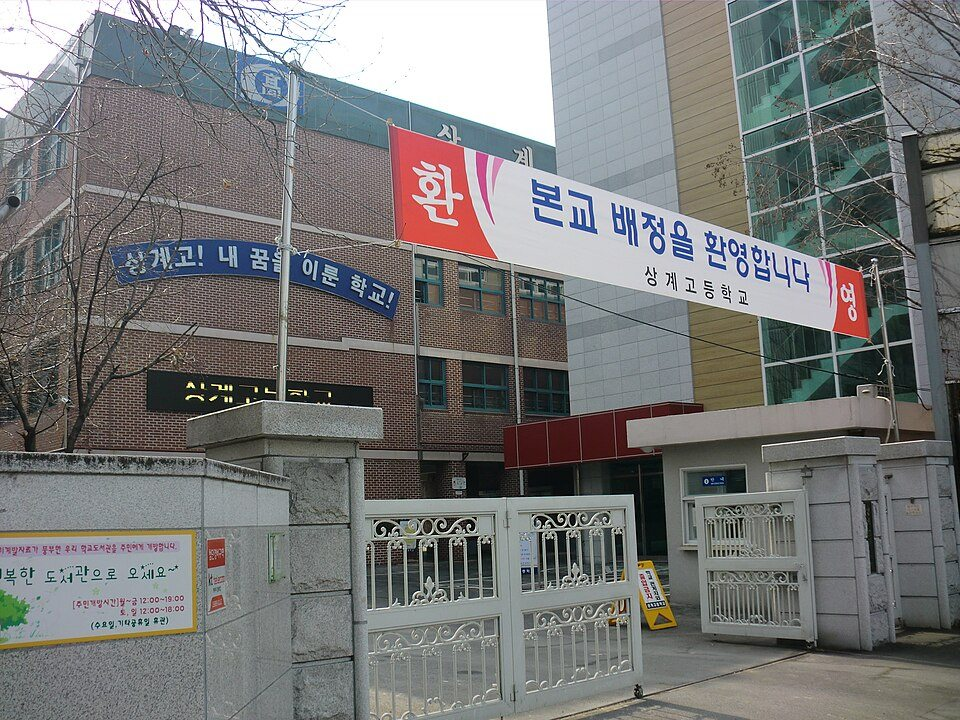
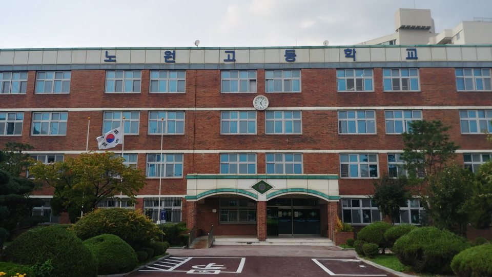

노원구는 학교가 51곳으로 서울에서 가장 많은 자치구 중 하나입니다. 중계동에는 서라벌고·재현고·중계중이, 상계동에는 상계고·대진고·불암고가 모여 있습니다. 은행사거리 학원가가 크지만 그만큼 반 편성이 촘촘해서, 진도가 맞지 않는 학생은 집으로 오는 수학과외·국어과외를 따로 찾는 경우가 많습니다.
오늘은 노원구로 직접 찾아가는 선생님 중 두 분을 소개합니다. 한 분은 수학·과학을 함께 보는 선생님, 한 분은 국어만 전문으로 하는 선생님입니다.
노원구에서 고등 수학과외를 찾을 때 맞는 선생님입니다. 수학과 과학을 중1부터 고3까지 함께 보기 때문에, 이과 과목을 나눠서 두 분께 맡길 필요가 없습니다.
수능 수학 만점을 받은 이력이 있지만 수업은 상위권만 보는 방식이 아닙니다. 점수와 학년에 대한 편견 없이 지금 학생 수준에서 시작해, 수와 도형의 원리를 기초부터 다시 잡아 줍니다. 공부에 흥미가 떨어진 학생에게 목표를 세워 주고 학습 계획표 쓰는 법까지 가르치는 편이라, 성적보다 공부 습관이 먼저 필요한 학생에게 특히 맞습니다.
고ㅇ진 선생님 상세 프로필 →노원구에서 중등·고등 국어과외를 제대로 맡기고 싶을 때 맞는 선생님입니다. 국어만 전문으로 하는 선생님이라 초6부터 고3까지 학년별로 무엇이 부족한지 정확히 짚습니다.
눈여겨볼 점은 국어국문학과 교육심리학을 함께 전공했다는 것입니다. 석사과정에서 학습상담과 학습치료를 전공해서, 국어 실력 자체보다 왜 이 학생이 지문을 읽고도 답을 못 고르는지를 먼저 봅니다. 학원에서 1:다수와 1:1을 모두 해 본 경력이라 내신과 수능 대비 모두 가능합니다. 다만 수업 가능 시간이 평일 낮과 토요일 오후에 몰려 있어, 시간대 확인이 먼저입니다.
박ㅇ정 선생님 상세 프로필 →
학교마다 시험 출제 경향과 수행평가 비중이 달라서, 학교별로 준비법을 따로 정리해 두었습니다.
👉 노원구 수학과외 선생님 · 노원구 국어과외 선생님 · 관리 학교 51곳 전체 보기